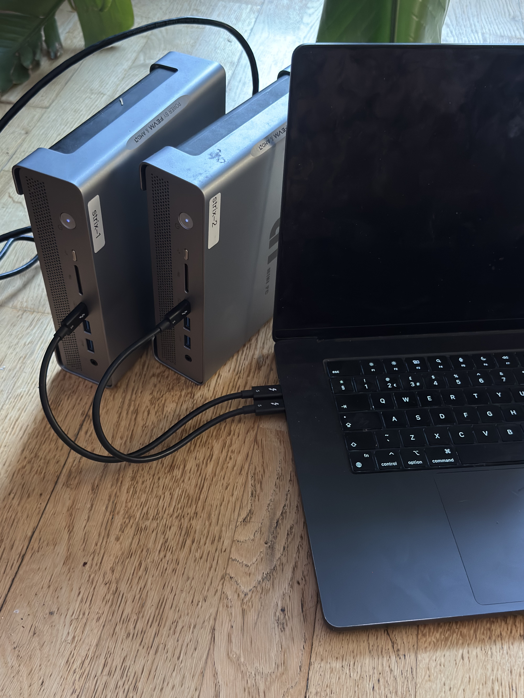
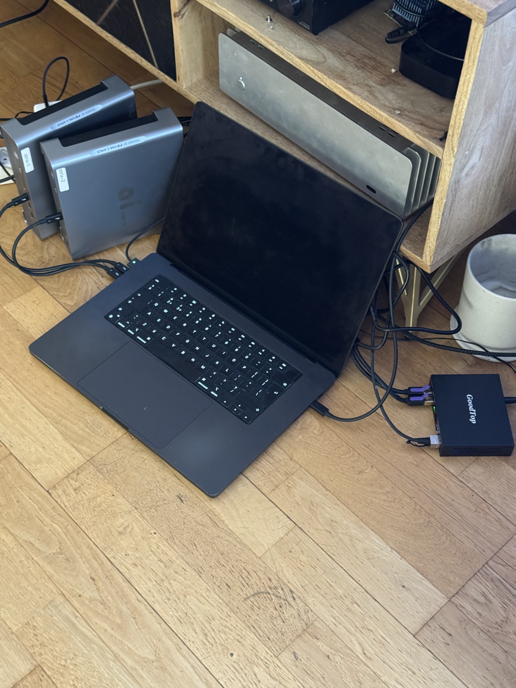
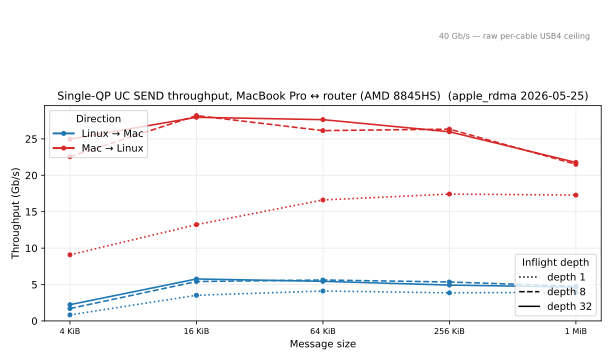
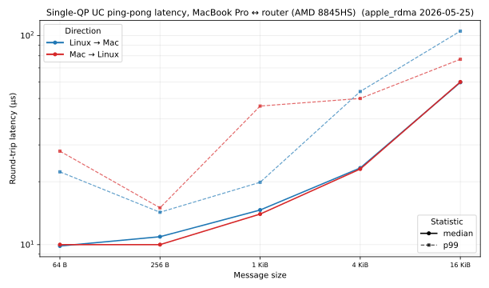
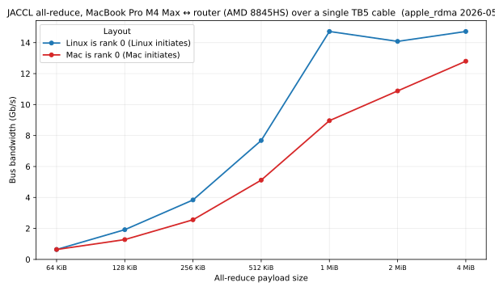
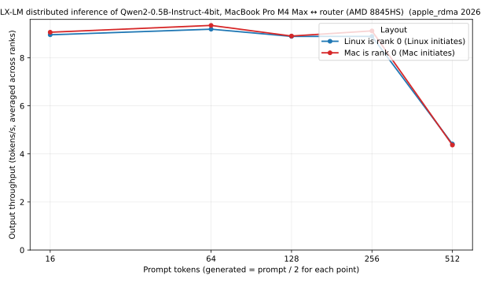

Bonus Round I: AD/FA57: Apple's RDMA-over-Thunderbolt
I had initially assumed that the MacOS RDMA implementation described in TN3205 required some special hardware support in the Thunderbolt controller to achieve 'true' RDMA (hopefully I explained elsewhere that our implementation is "Soft DMA"- even if we're woken on interrupts and only copy DMA descriptors with the CPU, it's orders of magnitude higher latency than an ASIC could achieve). Feeling emboldened from our ~48 Gb/s / ~7 µs headline from our aggregated Linux↔Linux rails, I went looking for what sort of latency Apple was claiming for their implementation and came across a writeup that pegs it at sub-50 µs — hold on a second, our single-QP ib_write_lat already comes in around 7 µs on the same generation of controller, ~7× better. Could it be that there's no special magic in the Apple Thunderbolt controller (I recall seeing Designware somewhere — that's a common IP vendor and similar blocks likely end up in non-Apple USB4 controllers) and Apple's implementation is just running the same kind of software path we are, only less aggressively tuned? I'm curious..

There's a special dance you have to do on MacOS to enable the RDMA protocol — boot into macOS Recovery, open Terminal, run rdma_ctl enable, and reboot (per TN3205's "Enabling RDMA over Thunderbolt" section). Given the frequency of kernel lockups during testing, I can only assume enabling this functionality gives any adversary at the other end of the thunderbolt cable (or in the middle!) unfettered access to the most secure rings of your OS and owns you immediately. If I didn't mention already, this also applies to our Linux module.
After enabling this setting and rebooting I connected my M4 Max 128 GB MacBook (I know.. I use it for mlx-lm and GMeet) via 2 of its 3 TB5 Ports to each strix machine and observed the XDomain advertisement:
$ ssh strix-1 'sudo journalctl -k -b -o short --no-pager | grep -E "Apple Inc|apple data path|apple ib_device"'
May 26 03:28:49 strix-1 kernel: thunderbolt 0-2: Apple Inc. Mac16,5
May 26 03:28:49 strix-1 kernel: thunderbolt_ibverbs: peer 3 created backend=apple
May 26 03:28:49 strix-1 kernel: thunderbolt_ibverbs: deferring Apple data path service id=1 route=0x2 until TBnet neighbor is proven
May 26 03:30:04 strix-1 kernel: thunderbolt_ibverbs: enabled Apple data path service route=0x2 tx_path=9 rx_path=9 tx_hop=2 rx_hop=2
May 26 03:30:04 strix-1 kernel: thunderbolt_ibverbs: registered apple ib_device usb4_rdma4 rail=peer3/0 domain=0 guid=0300544259524253Mac16,5 is the M4 Max MacBook Pro 16"; our thunderbolt_ibverbs module sees its XDomain advertisement land as peer 3 backend=apple, waits for the matching TBnet identity beacon, then enables the Apple data-path service on hop 2 and registers a fifth usb4_rdma* IB device alongside the four peer-to-peer Strix rails.
aside: I also tested this on my venerable MacBook Air M1 and despite performing the same dance, no AD/FA57 advertisement. I think this is probably related to Apple's claim that this implementation requires TB5, but at this point I don't really understand why.
Interesting — it advertises an XDomain service called AD/FA57 (the one described in the TN document) and the LOGIN dance seems to be already handled for us by thunderbolt-net. At this point we should remember that the USB4NET protocol, which thunderbolt-net implements, is in fact the same protocol Apple has used to implement its TB networking since the Thunderbolt 1/2 era on Intel Macs — it's now an open protocol that anyone can implement. Perhaps we can expect AD/FA57 to be similarly welcoming?
Well- no.
I spent a few cycles on this, frustrated by the following things:
- Bringing up and configuring the Thunderbolt interfaces requires root privileges and thus a sudo password. I think I lasted maybe 2 rounds of 'please run these commands for me with sudo' before surrendering my Mac to password-less sudo.
- Kernel locks up A LOT, and after the machine reboots it requires the password to be physically entered before unlocking the root FS — I don't think it can be done remotely. I wasn't quite ready to disable FileVault since I use this machine for GMeet, so over the past few weeks I've got pretty quick at hearing its startup chimes and logging in again.
- Something is different in our controller regarding E2E flow control. I went down a lot of rabbit holes with this; my current understanding is something like: on the Apple TB controller, you can open many Tx/Rx pairs and enable E2E flow control on each individual pair and the controller will share the underlying physical capacity between them. But when we try to do this on our Strix Halo controller, it bugs out — only one E2E RX ring can be active per direction; whichever ring carries active traffic finds its TX wedged because the controller doesn't return credits for the second E2E ring.
On the MacOS side, the RDMA interface seems to go into some sort of 'low power' state, where instead of it's usual fast-path (polling?) receive path where we see very good (~5us) latency for basic UC verbs, at some point you fall into this timer where events get coalesced every 5s and so even after battering out a compatible frame protocol, the higher-level collectives like JACCL end up hanging and requiring a tear-down of the device (if not a kernel panic..).
To try to get more angles on this, I tried to think of other devices I had with USB4, for differential diagnosis.
My Init7 25 GbE residential fibre needs a headless Linux router to terminate, running nixos of course! The board I'm using is based on the previous generation of AMD APU — 8845HS.
ChangWang CWWK AMD-8845HS 8-bay NAS/USB4/40G rate 8K display 4 network 2.5G/9 SATA/PCIe x16 ITX motherboard

When I connected this device to my MacBook, suddenly I started having a lot more luck — the 8845HS's USB4 controller (Phoenix2 NHI) succeeds where Strix Halo's doesn't. With some minimal changes to perftest, I was able to run a suite of tests via the mac↔router link.
aside: the Strix Halo NHI has a structural one-E2E-RX-ring limit — loading thunderbolt_net + thunderbolt_ibverbs together leaves the second E2E ring's TX-side credit returns dropped on the floor, and whichever ring carries the active traffic wedges its TX direction (zero MSI-X, descriptors never consumed). Falcon Ridge's QUIRK_E2E workaround doesn't transpose to AMD silicon. So Strix Halo ↔ M4 Max RDMA works, but only with thunderbolt_net unloaded so thunderbolt_ibverbs is the sole E2E ring; I used the 8845HS box for the bench numbers here because that constraint doesn't bite there.
Despite all those gaps, the soft-DMA approach gets us far enough to do real verbs work across the cable — at least when the Linux side is the router box.
What works
As of 2026-05-28, on the router ↔ MacBook Pro pair, single-QP UC SEND lands bit-perfect in both directions — the receiver's MR pages compare byte-for-byte against the sender's deterministic pattern via uc_oneway --check (the TCP side channel only carries a one-byte handshake, so bytes have to land via DMA into the registered region):
| direction | wire rate (4 KiB / qps 1) | round-trip @ 4 KiB |
|---|---|---|
| mbp → router | 6.5 Gb/s | ~10 µs |
| router → mbp | 1.8 Gb/s | ~10 µs |
The direction asymmetry isn't fundamental — our Linux TX path currently caps itself at apple_tx_max_inflight_wr=1, apple_tx_max_inflight_frames=2, a conservative leftover from an earlier Apple-side overflow fix. Lifting that ceiling should recover most of the missing throughput on the slow direction.
Raw verb throughput
A caveat before the numbers: every bandwidth figure here (and perftest's) is computed as messages × size / (last CQE time − first WR post time). On Apple's UC path the CQE fires when the descriptor leaves the SQ ring, well before the bytes are delivered to the peer. With deep inflight that gap opens up and the headline number runs ahead of actual wire throughput — the table above (qps 1) is close to wire-rate because each WR is essentially waited on; the deep-inflight numbers below are not. On a single 2-lane TB cable the wire ceiling is 40 Gb/s aggregate, so anything ≥40 Gb/s is by definition the CQE-fire artifact.
Sweeping inflight depth on top of the single-QP case, the Mac→Linux direction's CQE-fire rate reaches ~28 Gb/s on 16 KiB messages once you let a few sends queue up; Linux→Mac plateaus around 5-6 Gb/s no matter how deep we go (same TX-window cap as above):

Ping-pong latency
Median round-trip lands at ~10 µs at small payloads in both directions, climbing to ~60 µs at 16 KiB. p99 stays close to the median on Mac→Linux, but Linux→Mac shows a long tail in the tens of milliseconds — consistent with Apple's receive path occasionally falling into its coalesced low-power state and waking late:

Collective: JACCL all-reduce
JACCL all-reduce runs end-to-end across the same path in both rank orderings, 4 KiB → 4 MiB, with bus bandwidth tracking close to the underlying UC SEND ceiling for the larger payloads:

Real workload: distributed LLM inference
MLX-LM distributed inference of Qwen2-0.5B-Instruct-4bit across Mac and Linux ranks holds a steady ~9 output tok/s through prompt 256 / generated 128 in both layouts, falling off at the 512/256 point — a "real workload survives the path" sanity check rather than a throughput headline:

What still doesn't
- Anything other than UC SEND. Apple's
rdma_en*exposes UC only — RC, UD, and READ all fail atmodify_qpwith-ENOTSUPP. UC WRITE looks like it works —perftest ib_write_bwmbp→strix reports tens of Gb/s — but Apple's wire format for UC WRITE is raw user bytes with no BTH/GRH/LRH, norkey, noraddr. So while frames arrive and get consumed by our RX path, there's nothing on the wire to dispatch into the WR's target MR; the bytes stream into a single per-QP receive buffer instead of the address the sender named.uc_write_verifyconfirms the receiver MR is unchanged. Linux→Mac WRITE rejects at the TX side (tbv_post_apple_sendreturns-EOPNOTSUPPfor anything butIB_WR_SEND).
This apple_rdma work is a clean-room implementation based on public observation of Apple's Thunderbolt traffic and the publicly-documented Apple TN3205 technote. No Apple source code was used.